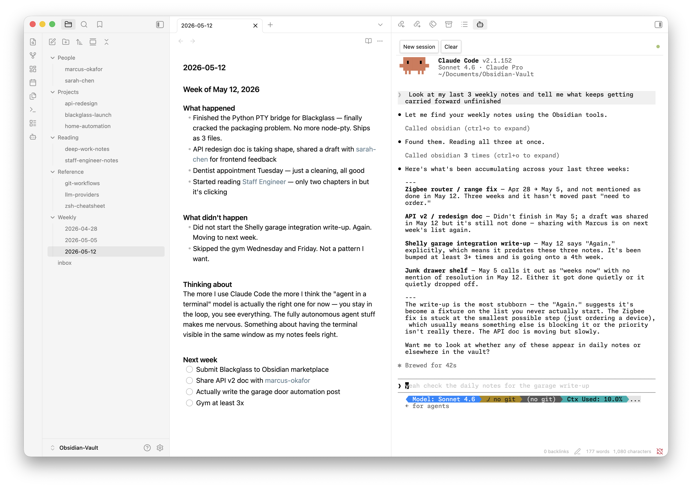

Not a wrapper. Not a reimplementation. The actual Claude Code CLI running in a real terminal alongside your notes: every slash command, every MCP tool, every session exactly as you'd have it in a standalone terminal.
macOS · Linux · Windows · Python 3 · Claude Code CLI · Obsidian 1.6+
Windows users: install Python 3 and run pip install pywinpty to enable the interactive terminal.

Features
The actual Claude Code CLI in your sidebar. Every slash command, every tool, full session continuity. If you know Claude Code, you already know this.
A built-in MCP server gives Claude structured access to your vault: read, search, create, and update notes via typed tools.
One-shot queries without a terminal session. Responses render as Markdown. Choose your model per query.
Ask Claude about your active note, selected text, or any file via the right-click context menu. No copy-paste required.
The MCP server generates a fresh Bearer token on every launch. No other local process can access your vault through it.
No compilation step, no node_modules. macOS and Linux work out of the box. Windows users need Python 3 and pip install pywinpty — then it's the same experience.